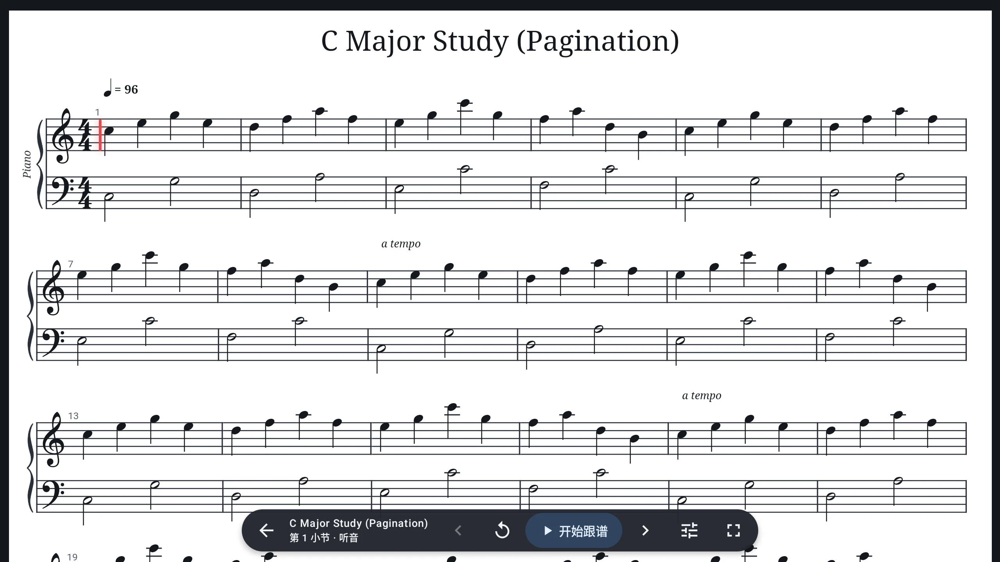
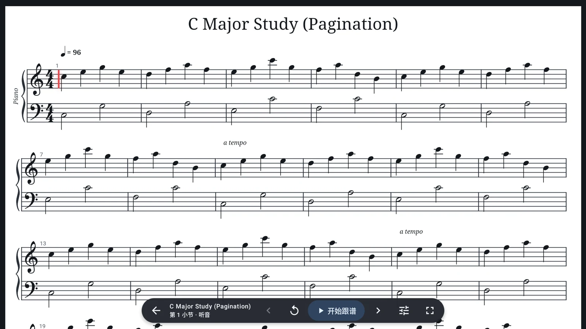

你弹到哪，谱跟到哪。
通过麦克风或 USB MIDI 获取演奏，用完整音高、起音与速度对齐 MIDI / MusicXML。乐谱约束预测让光标连续前进，低置信度时暂停翻页。
钢琴模型 · 序列对齐 · 预测跟随纸上的谱，也能流动。
导入 PDF 或照片，按顺序排好页面、设定总时长，即可匀速滚动。随时暂停，也能手动调整速度。
PDF / 照片使用定时滚动，无需音高匹配双手留给琴键，目光留给旋律。导入你的乐谱，让实时跟谱与自动翻页，陪你完成下一次练习。
开源 · Android 10+ · 钢琴练习

少些分心，多些音乐
从第一份乐谱到下一段旋律，给日常练习一个顺手的起点。
通过麦克风或 USB MIDI 获取演奏，用完整音高、起音与速度对齐 MIDI / MusicXML。乐谱约束预测让光标连续前进，低置信度时暂停翻页。
钢琴模型 · 序列对齐 · 预测跟随导入 PDF 或照片，按顺序排好页面、设定总时长，即可匀速滚动。随时暂停，也能手动调整速度。
PDF / 照片使用定时滚动，无需音高匹配弹奏中央 C 完成基准校准，再查看当前音符与音分偏差。多次采样取中位数，降低单次误判的影响。
中央 C 校准 · 音符识别 · 音分显示走近真实界面
以下为仓库中的 Android 应用截图。\n切换场景，了解不同的练习方式。

简单开始，慢慢进步
导入 MIDI / MusicXML，或用 PDF 与照片建立滚动谱。也可以从应用内置示例开始。
选择听音或 USB MIDI 跟谱，也可录制 MIDI 并导出；PDF 与照片使用定时滚动。
跟随光标、播放乐谱，或让页面按节奏滚动。随时暂停、调整，再继续练习。
开放的代码，认真的细节
Google 官方 Compose Material 3、alphaTab、Magenta 实时钢琴模型和 Parangonar 在线对齐协作。输入、模型与评分都在设备本地处理。
探索 GitHub 源码 ↗Material 3 界面，横竖屏适配与本地偏好保存。
在 WebView 中完成乐谱排版与声音合成。
Magenta / LiteRT 钢琴音符推理、Parangonar 对齐与乐谱约束预测。
下一首，从这里开始
Android 1.0 已重构；独立网页版单独维护，不代表相同算法或功能。
Android 10 及以上手机与平板。下载 v1.0.0，查看正式版变更、已知限制与测试报告。
下载 Android 版 ↓APK 通过 GitHub Releases 分发无需安装 APK，即可体验独立网页版本。在实际跟谱时，根据浏览器提示允许麦克风访问。
体验网页版 ↗查看网页版独立仓库 ↗1.0.0：深色演奏、白色琴谱、五线谱／简谱切换、音高与节奏评分、USB MIDI 录制和导出。定位回归已达 97% 以上；重弹恢复仍有延迟，实体麦克风和 USB 硬件需按设备验证。
PDF 与照片使用定时滚动模式：按顺序排列页面，设定总时长，再调整滚动速度。麦克风驱动的音符匹配与自动跟谱用于 MIDI / MusicXML 等结构化乐谱；项目未提供 PDF 或照片的乐谱识别转换功能。
跟谱依赖真实麦克风输入。环境噪声、设备麦克风、音量与演奏内容都会影响识别效果。建议在真机上测试，不以模拟器表现作为判断依据；本项目不承诺所有环境下的识别准确率。
跟谱首次准备会加载本地钢琴模型，不等待播放音源。示范播放的钢琴音源按需加载，失败可重试。
不会。本页的跟谱演示只是基于真实截图的视觉动画，不播放音频，也不采集声音。要体验实际识别，请使用 Android 应用或独立网页版。
应用原创代码采用 BSD 3-Clause；Magenta、Parangonar、LiteRT 和 AndroidX 为 Apache 2.0，alphaTab 为 MPL 2.0，Bravura 为 SIL OFL，FreePats 音源为 CC0。应用关于页提供协议全文和上游来源。
A LITTLE LESS FRICTION. A LITTLE MORE MUSIC.
让工具安静地陪伴，让练习继续发生。
开始一次练习 ↗